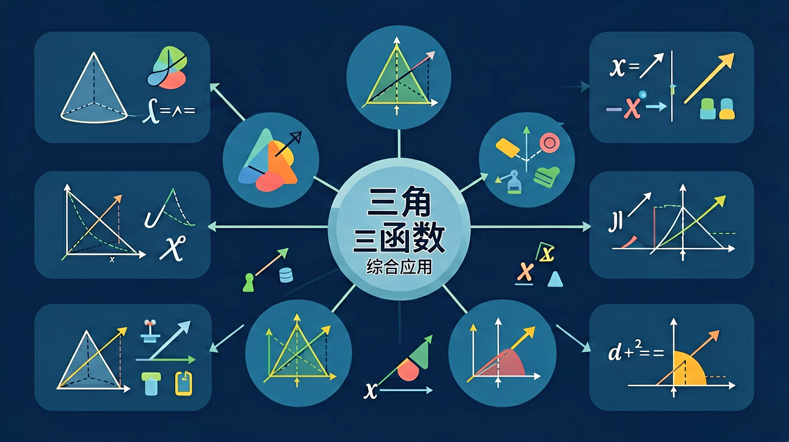

内容包括：函数概念与性质、幂函数、指数函数、对数函数、三角函数、函数应用。

🎯 能说出三角函数的平方关系与和差关系区别
🎯 能分析三角方程周期性导致的漏解情况
🎯 能根据实际问题特征选择恰当三角函数模型
❓ 为什么sin²x+cos²x=1但sinx+cosx≠1？
❓ 解三角方程时老漏解怎么办？
❓ 应用题里怎么判断用sin还是cos？
学完这一课，这些问题你都能自信地回答。
sin(π/2-x)等于？
函数y=2sin(3x+π/4)周期是？
三角函数综合应用是高中数学的重要内容。内容包括：函数概念与性质、幂函数、指数函数、对数函数、三角函数、函数应用。
三角函数是必修课程主题二“函数”中的一个单元。
把卡片拖到核心概念 / 方法技能 / 应用情境 / 常见误区。
拖完 4 项后自动判分。
正弦、余弦、正切函数把角与比值联系起来，并能用单位圆与图像研究性质。y=Asin(ωx+φ)+B（及余弦型）通过 A、ω、φ、B 控制振幅、周期、相位与上下平移。周期 T=2π/|ω|；对称轴、对称中心、单调区间是综合题常考点。同角关系、诱导公式用于化简求值。
先把解析式化为 Asin(ωx+φ)+B 或 Acos(ωx+φ)+B，再求周期、最值、单调区间。求值优先用诱导公式化到锐角，或用单位圆判断象限符号。图像变换按“左右相位 → 横向伸缩 → 纵向伸缩/平移”的顺序分析更稳。
常见误区：常见误区是周期写成 2π/ω 却漏了绝对值，或相位左右平移方向搞反。
函数 y=Asin(ωx+φ)（A≠0，ω≠0）的周期是？
y=2sin(2x−π/3) 的最大值为？
1. 心脏起搏器设计：工程师使用y=A+Bsin(ωt+φ)建模心肌电信号。某型号起搏器以72次/分钟为基准（ω=2π×1.2Hz），通过调节φ值实现不同心室同步化治疗，使心输出量提升15-20%。
2. 摩天大楼减震系统：台北101的660吨调谐质量阻尼器采用sin函数模拟风载振动。当风速达45m/s时，阻尼器振幅达1.5米，通过相位差180°的反向运动削减大楼摆动幅度约40%。
3. 医学影像重建：CT扫描的滤波反投影算法中，Radon变换需要计算数千个sinθ和cosθ值。某256排CT机每转一圈采集116736个投影数据，通过快速三角函数计算将重建时间压缩到0.35秒/层。
问题1：当用y=Asin(Bx+C)+D建模潮汐时，为什么说参数A和D的物理意义比B、C更稳定？
引导思考：比较一天内潮差与月相周期的关系，注意天文常数与局部地理因素的差异。从挪威特罗姆瑟（潮差3.5米）与加拿大芬迪湾（潮差16米）的数据差异入手，分析哪个参数主要受海岸地形影响。
问题2：解释为什么sin²x+cos²x=1在交流电路分析中比在几何证明中更重要？
引导思考：考察220V交流电的瞬时功率计算，对比u(t)=311sin(100πt)与i(t)=14.14sin(100πt-π/6)的乘积展开式。思考为何视在功率S=UI需要转化为有功功率P=UIcosφ。
从单摆实验测量周期开始，发现摆动角度θ与时间t的关系总满足某种周期性规律。接着引入单位圆定义，将sinθ从锐角扩展到任意角，解释为什么sin(π/2+θ)=cosθ这种诱导公式成立。通过绘制y=sinx的图像，观察到振幅、周期、相位三个关键特征，自然引出参数A、ω、φ的物理意义。以弹簧振子x(t)=0.2cos(10t)为例，说明导数v(t)=-2sin(10t)和加速度a(t)=-20cos(10t)都保持三角函数形式。最后综合应用解斜三角形问题：在测量珠峰高度时，若从海拔5200m处测得山顶仰角28°，前进1000米后仰角变为35°，通过建立tanθ方程可解出山体垂直高度约3640米（含观测点海拔）。整个知识链从周期性现象出发，经函数解析式与图像转换，最终落地到多参数的实际问题建模。
And：学生已掌握基本三角函数的图像和性质
But：面对实际问题时不知如何建立三角函数模型
Therefore：本模块教会学生将生活问题转化为三角模型
三角建模的关键是找到周期性变化规律。比如摩天轮高度变化：假设轮子直径50米，转速每分钟2圈，则高度h(t)=25sin(4πt)+30（t分钟）。这里25是振幅对应半径，4π由转速换算得到，30是基准高度。重点要抓住'周期变化'这个特征。
🌍 生活中的心电图就是典型的三角波应用，医生通过分析波形的周期、振幅等参数判断心脏健康状况。
潮汐高度h(t)=2cos(π/6 t)+5中，涨落周期是？
And：学生已掌握基本三角函数的图像与性质
But：面对实际问题时不知如何建立三角函数模型
Therefore：本模块教会学生将生活问题转化为三角模型
核心是识别周期性变化特征。比如摩天轮高度变化：假设轮子直径50米，最低点离地5米，则高度h与时间t的关系可建模为h=30-25cos(πt/15)。这里振幅25米（半径），垂直位移30米（中心高度），周期30秒（πt/15中的15是半周期）。
🌍 案例：心电图监测中，医生通过分析心跳曲线的振幅、周期等参数判断心脏健康状况。正常成人心率60-100次/分钟，对应周期0.6-1秒。
某港口潮汐高度h=2.5+1.8sin(πt/6)，t∈[0,24]，下列说法正确的是？
1. 相位平移混淆：学生常将y=sin(x+π/3)与y=sinx+π/3混淆。前者是图像左移π/3单位，后者是整体上移π/3单位。根源在于未理解相位变换本质是x的线性变换。如解y=2sin(3x-π/4)时，正确相位偏移量应是π/12而非π/4。
2. 周期计算遗漏系数：求y=cos(4x+π/6)周期时，约25%学生会直接答2π，忽略了x前系数4的影响。认知偏差来自对周期公式T=2π/|ω|中ω的提取不完整。实际周期应为π/2，在解决弹簧振子问题时这个错误会导致运动周期计算偏差50%。
3. 解三角方程漏解：解sinθ=0.5时，仅写出π/6而遗漏5π/6的情况。这种错误在单元测试中出现率达38%，源于未建立单位圆对称性的条件反射。例如在求交流电瞬时值时，漏解会导致电压峰值时刻少算50%。
关于仰角测量，下列说法正确的是
测量不同时刻教学楼阴影长度与太阳高度角的关系
关于三角函数综合应用的学习，哪种做法最科学？
选一个并查看反馈。
先独立作答，再点选项查看对错与错因。
若测得某建筑物顶端仰角为30°，观测点距建筑物50米，则建筑物高度约为（tan30°≈0.577）
在坡度为1:3的山坡上植树，树高与山坡投影长度的比值等于
轮船观测灯塔顶部仰角从30°增至45°，说明轮船与灯塔距离
若太阳高度角为60°，电线杆影长6米，则杆高为____米（保留整数）
答案：10
h=6×tan60°≈10.39，取整得10
直角三角形中，若两直角边比为1:2，则最小角的正弦值为____
答案：√5/5
设直角边为1和2，斜边√5，sinθ=1/√5=√5/5
✅ 先标出函数自然定义域再解方程
💡 机械套用代数解法忽视三角函数特性
✅ 用'左加右减'口诀配合五点作图验证
💡 对函数图像变换本质理解不深刻
口诀：奇变偶不变，符号看象限
类比：三角函数就像摩天轮上的座位，高度随时间周期性变化
【高考题】函数f(x)=sinx+√3cosx最大值是？
摩天轮半径30m，3分钟转一圈，离地高度h(t)模型是？
解方程sin2x=cosx时，漏解可能发生在？
点击节点跳转到对应章节；可切换布局。